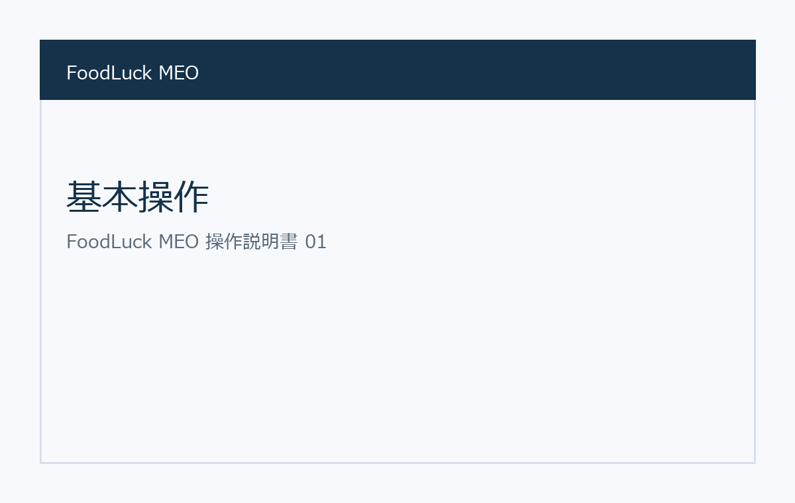
FoodLuck MEO 操作説明書 01
基本操作
FoodLuck MEO 操作説明書 01 基本操作 店舗一覧から管理画面を開き、目的のメニューへ迷わず進むための最初の資料 この資料でできるようになること FoodLuck MEOにログインした後、自分の店舗を開き、左メニューから必要な画面へ進めるようになります。この資料は、写真投稿やクチコミ返信などの細かい操作に入
機能別マニュアル、FAQ、運用資料をまとめて検索できます。
19件

FoodLuck MEO 操作説明書 01
FoodLuck MEO 操作説明書 01 基本操作 店舗一覧から管理画面を開き、目的のメニューへ迷わず進むための最初の資料 この資料でできるようになること FoodLuck MEOにログインした後、自分の店舗を開き、左メニューから必要な画面へ進めるようになります。この資料は、写真投稿やクチコミ返信などの細かい操作に入
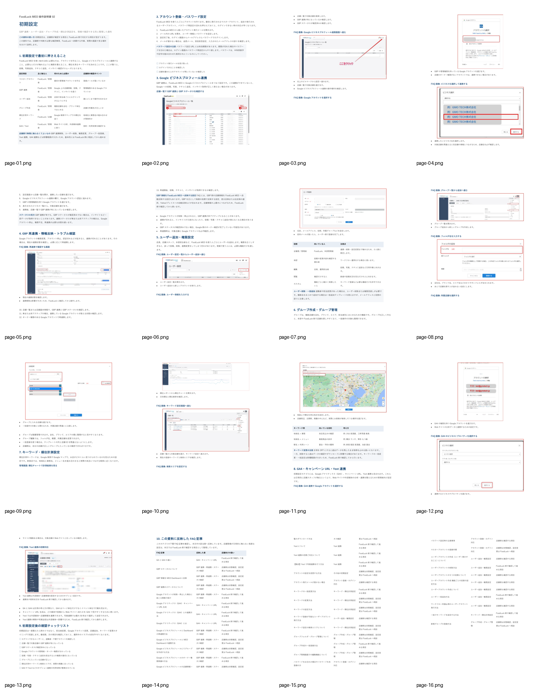
FoodLuck MEO 操作説明書 02
FoodLuck MEO 操作説明書 02 初期設定 GBP連携・ユーザー追加・グループ作成・順位計測設定を、現場で確認できる形に整理した資料 この資料の使い方 初期設定は、店舗側が確認する項目とFoodLuck側で対応する項目が混ざります。この資料では、店舗側で判断が必要な確認事項、FoodLuckへ依頼する作業、実
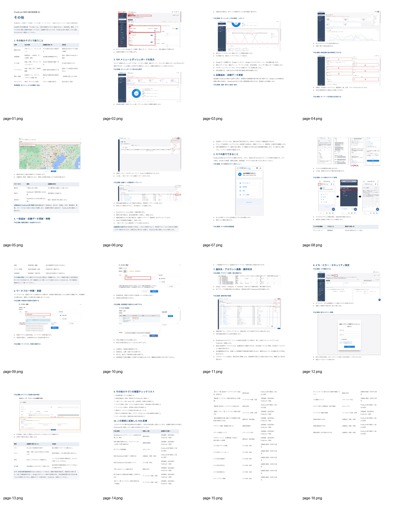
FoodLuck MEO 操作説明書 03
FoodLuck MEO 操作説明書 03 その他 店舗追加・店舗データ更新・スマホ版・ワークフロー・通知やセキュリティ設定の確認資料 このカテゴリの考え方 「その他」には、日常の投稿やクチコミ返信ではなく、設定変更、確認、トラブル対応に関わる機能が集まっています。店舗側で見てよいもの、FoodLuck側へ相談してから
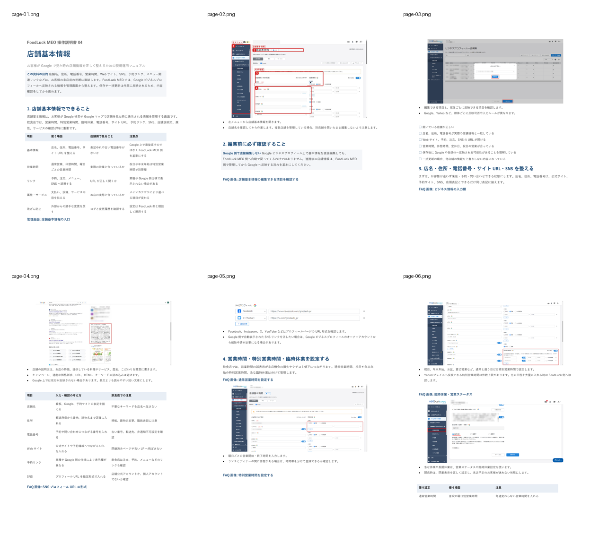
FoodLuck MEO 操作説明書 04
FoodLuck MEO 操作説明書 04 店舗基本情報 お客様がGoogleで見た時の店舗情報を正しく整えるための現場運用マニュアル この資料の目的 店舗名、住所、電話番号、営業時間、Webサイト、SNS、予約リンク、メニュー関連リンクなどは、お客様の来店前の判断に直結します。FoodLuck MEOでは、Googl
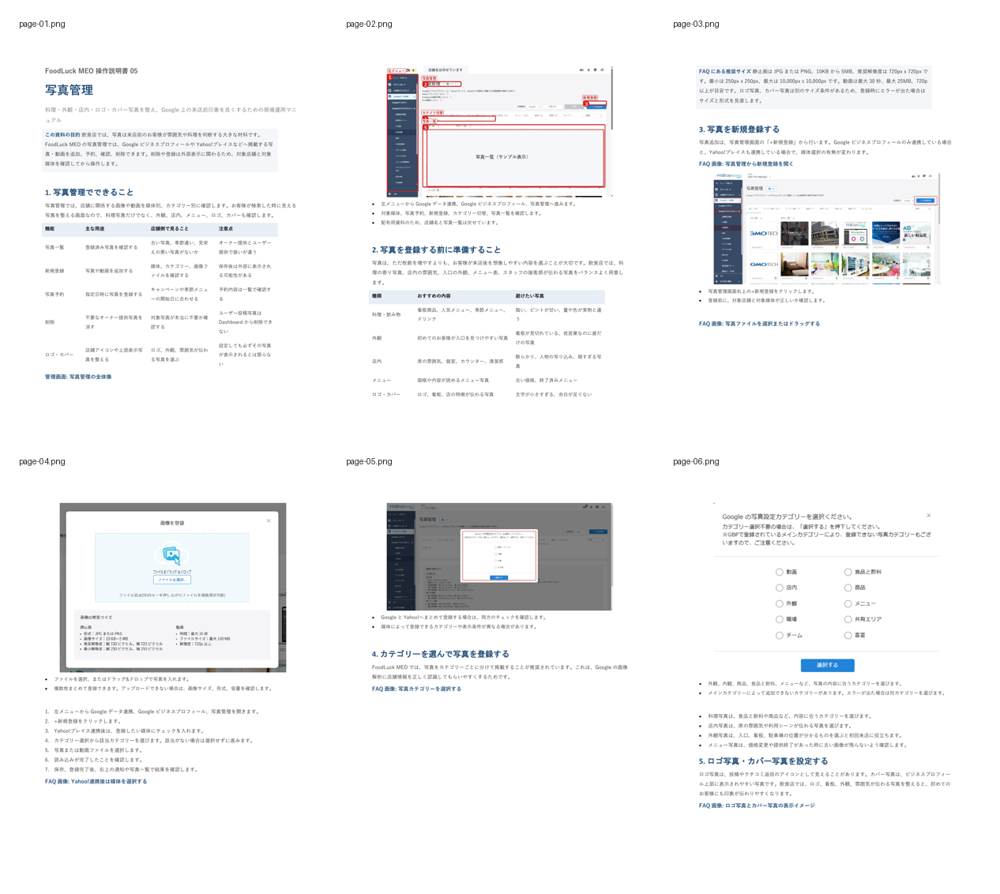
FoodLuck MEO 操作説明書 05
FoodLuck MEO 操作説明書 05 写真管理 料理・外観・店内・ロゴ・カバー写真を整え、Google上の来店前印象を良くするための現場運用マニュアル この資料の目的 飲食店では、写真は来店前のお客様が雰囲気や料理を判断する大きな材料です。FoodLuck MEOの写真管理では、Googleビジネスプロフィールや
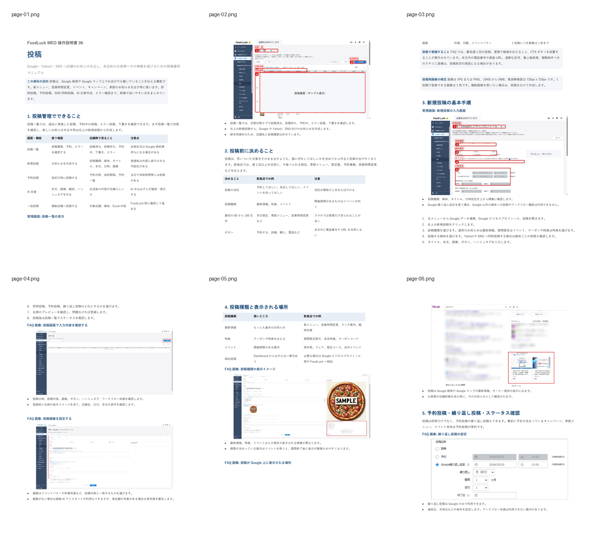
FoodLuck MEO 操作説明書 06
FoodLuck MEO 操作説明書 06 投稿 Google・Yahoo!・SNSへ店舗のお知らせを出し、来店前のお客様へ今の情報を届けるための現場運用マニュアル この資料の目的 投稿は、Google検索やGoogleマップ上でお店が今も動いていることを伝える機能です。新メニュー、営業時間変更、イベント、キャンペーン
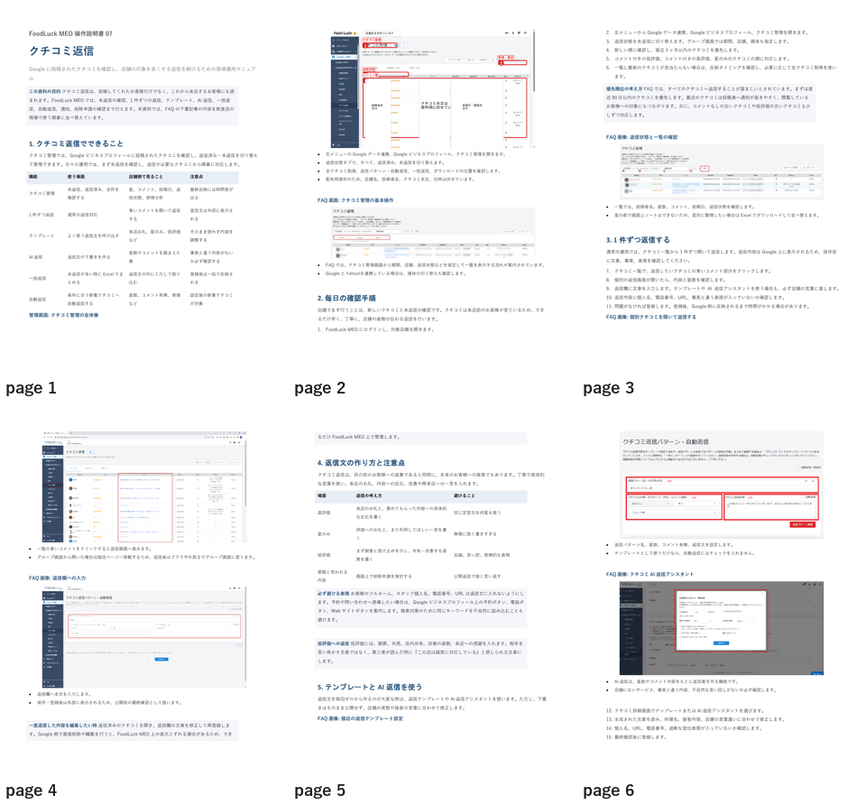
FoodLuck MEO 操作説明書 07
FoodLuck MEO 操作説明書 07 クチコミ返信 Googleに投稿されたクチコミを確認し、店舗の印象を良くする返信を続けるための現場運用マニュアル この資料の目的 クチコミ返信は、投稿してくれたお客様だけでなく、これから来店するお客様にも読まれます。FoodLuck MEOでは、未返信の確認、1件ずつの返信、
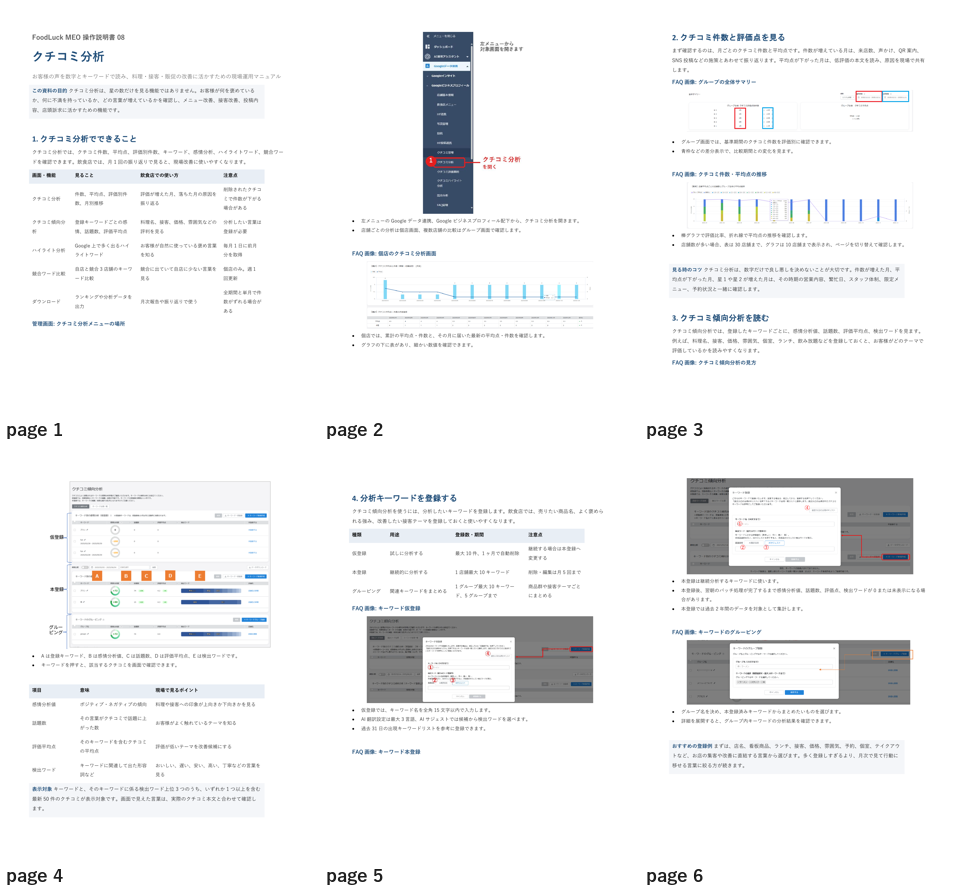
FoodLuck MEO 操作説明書 08
FoodLuck MEO 操作説明書 08 クチコミ分析 お客様の声を数字とキーワードで読み、料理・接客・販促の改善に活かすための現場運用マニュアル この資料の目的 クチコミ分析は、星の数だけを見る機能ではありません。お客様が何を褒めているか、何に不満を持っているか、どの言葉が増えているかを確認し、メニュー改善、接客改
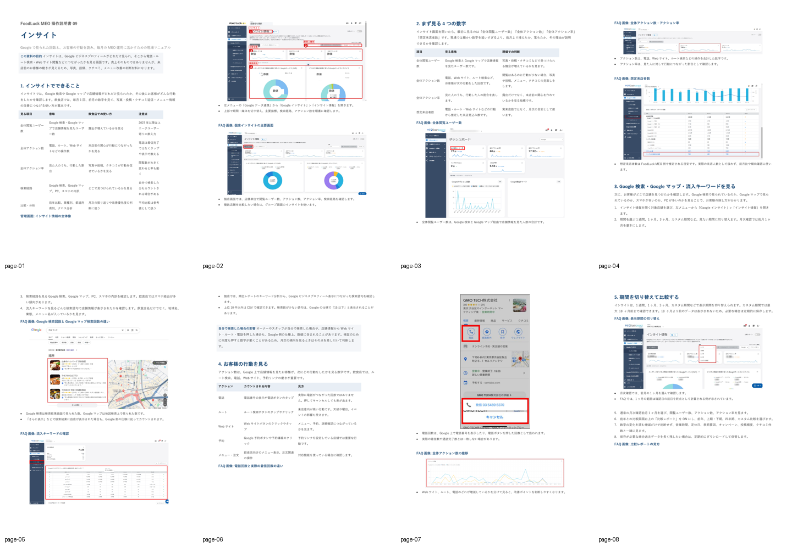
FoodLuck MEO 操作説明書 09
FoodLuck MEO 操作説明書 09 インサイト Googleで見られた回数と、お客様の行動を読み、毎月のMEO運用に活かすための現場マニュアル この資料の目的 インサイトは、Googleビジネスプロフィールがどれだけ見られ、そこから電話・ルート検索・Webサイト閲覧などにつながったかを見る画面です。売上そのもの
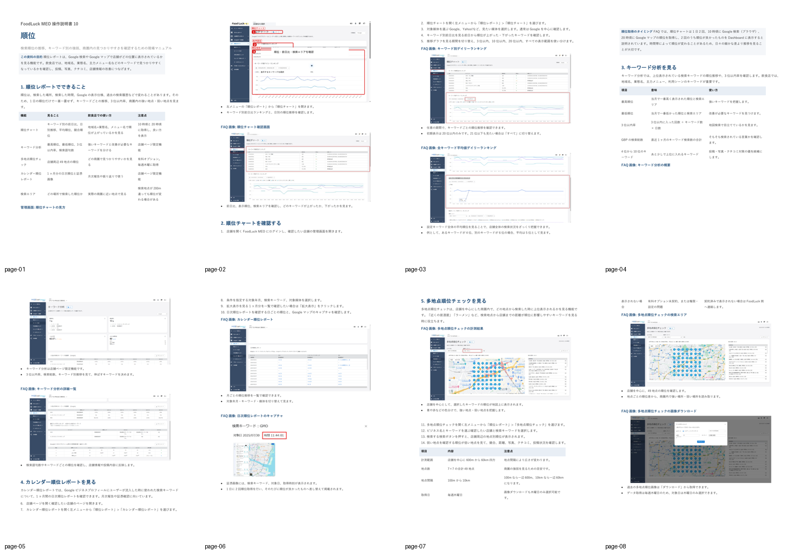
FoodLuck MEO 操作説明書 10
FoodLuck MEO 操作説明書 10 順位 検索順位の推移、キーワード別の強弱、商圏内の見つかりやすさを確認するための現場マニュアル この資料の目的 順位レポートは、Google検索やGoogleマップで店舗がどの位置に表示されているかを見る機能です。飲食店では、地域名、業態名、主力メニュー名などのキーワードで見
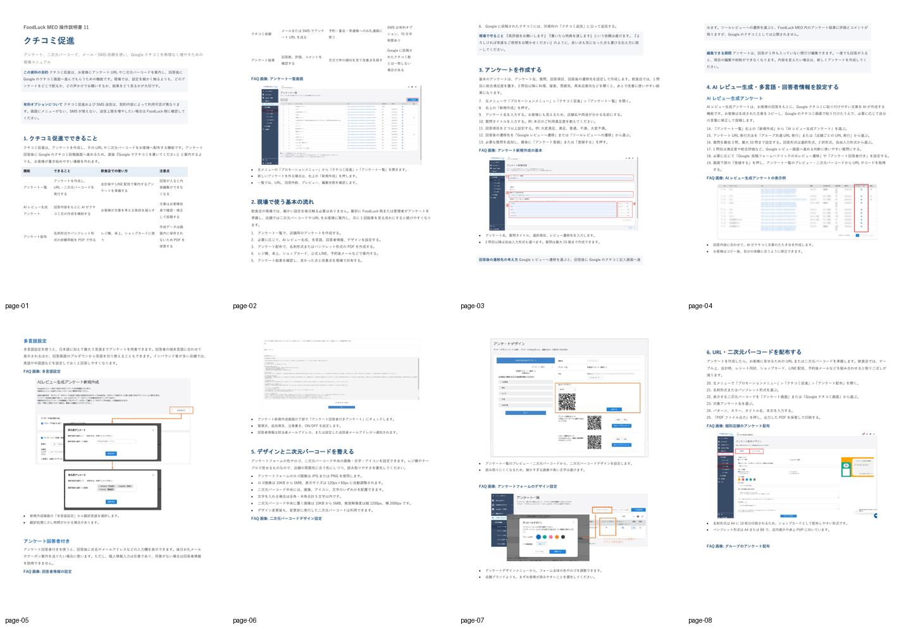
FoodLuck MEO 操作説明書 11
FoodLuck MEO 操作説明書 11 クチコミ促進 アンケート、二次元バーコード、メール・SMS依頼を使い、Googleクチコミを無理なく増やすための現場マニュアル この資料の目的 クチコミ促進は、お客様にアンケートURLや二次元バーコードを案内し、回答後にGoogleのクチコミ画面へ進んでもらうための機能です。
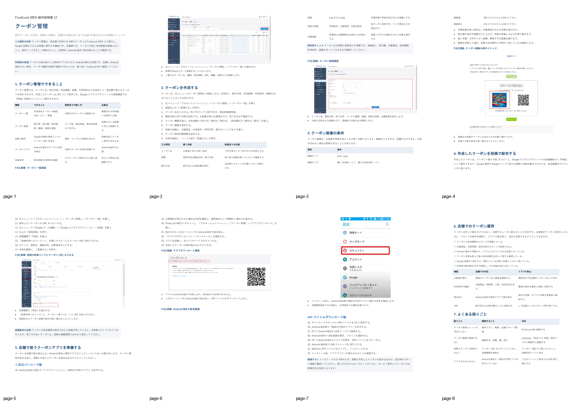
FoodLuck MEO 操作説明書 12
FoodLuck MEO 操作説明書 12 クーポン管理 割引クーポンの作成、投稿での配布、店舗での読み取りまでを迷わず進めるための現場マニュアル この資料の目的 クーポン管理は、実店舗で利用できる割引クーポンをFoodLuck MEO上で発行し、Google投稿などからお客様に案内する機能です。店舗側では、クーポン内
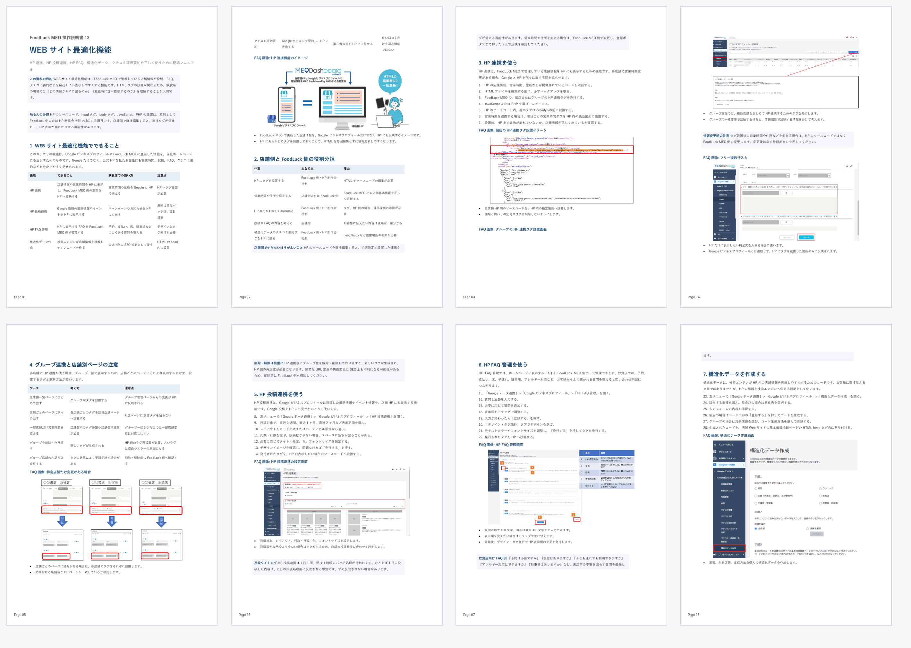
FoodLuck MEO 操作説明書 13
FoodLuck MEO 操作説明書 13 WEBサイト最適化機能 HP連携、HP投稿連携、HP FAQ、構造化データ、クチコミ評価要約を正しく使うための現場マニュアル この資料の目的 WEBサイト最適化機能は、FoodLuck MEOで管理している店舗情報や投稿、FAQ、クチコミ要約などを自社HPへ表示しやすくする機
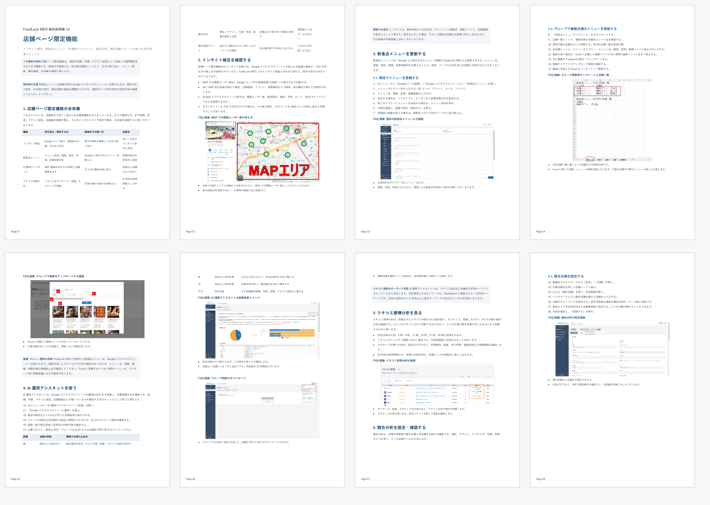
FoodLuck MEO 操作説明書 14
FoodLuck MEO 操作説明書 14 店舗ページ限定機能 インサイト補足、飲食店メニュー、AI運用アシスタント、競合分析、順位変動アラートを使うための現場マニュアル この資料の目的 店舗ページ限定機能は、通常の投稿・写真・クチコミ返信より一段進んだ運用確認をするための機能です。飲食店の現場では、毎日触る機能という
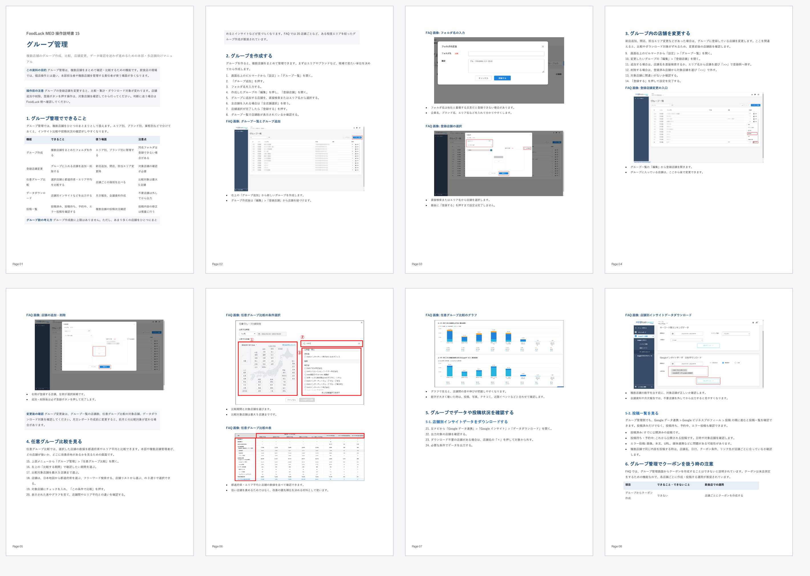
FoodLuck MEO 操作説明書 15
FoodLuck MEO 操作説明書 15 グループ管理 複数店舗のグループ作成、比較、店舗変更、データ確認を迷わず進めるための本部・多店舗向けマニュアル この資料の目的 グループ管理は、複数店舗をまとめて確認・比較するための機能です。飲食店の現場では、個店操作とは違い、本部担当者や複数店舗を管理する責任者が使う場面が
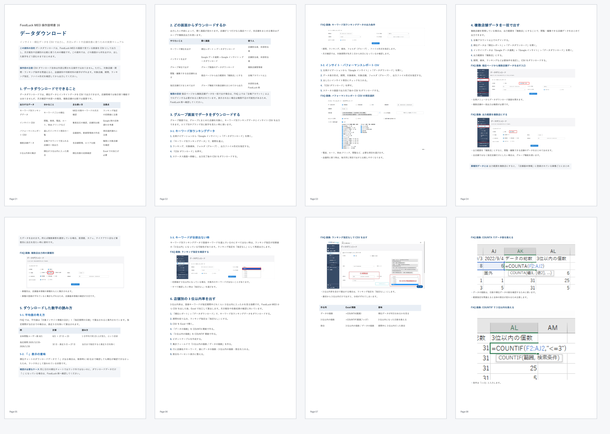
FoodLuck MEO 操作説明書 16
FoodLuck MEO 操作説明書 16 データダウンロード インサイト・順位データをCSVで出力し、月次レポートや店舗改善に使うための実務マニュアル この資料の目的 データダウンロードは、FoodLuck MEOの画面で見ている数値をCSVとして出力し、月次報告や店舗別の比較に使うための機能です。この資料では、どの
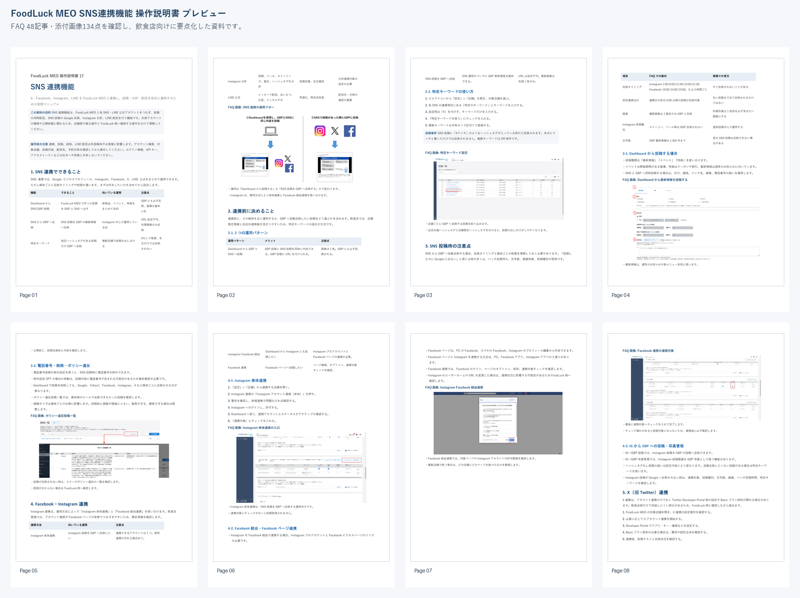
FoodLuck MEO 操作説明書 17
FoodLuck MEO 操作説明書 17 SNS連携機能 X、Facebook、Instagram、LINEをFoodLuck MEOと連携し、投稿・分析・配信を安全に運用するための実務マニュアル この資料の目的 SNS連携機能は、FoodLuck MEOと各SNS・LINE公式アカウントをつなぎ、投稿の同時配信、S
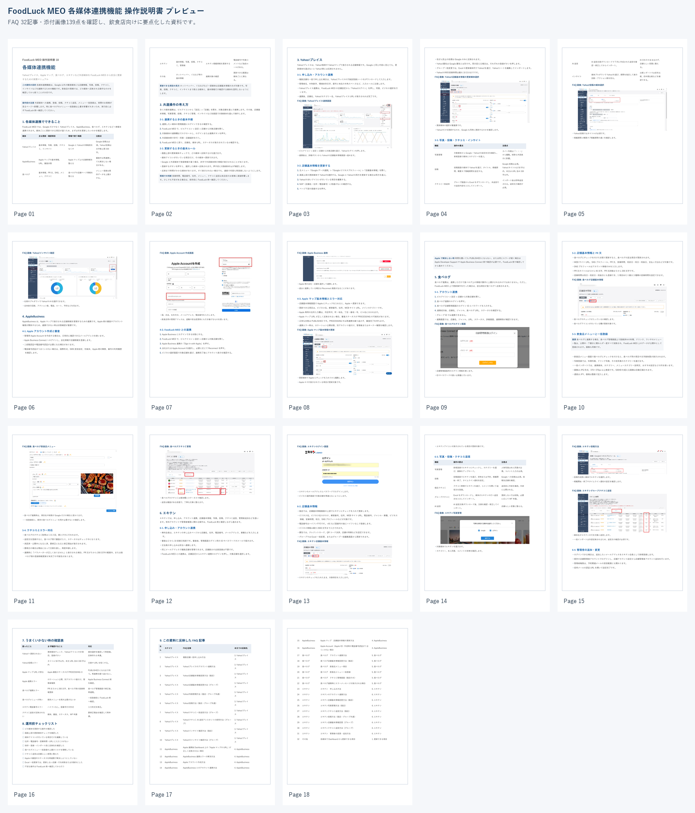
FoodLuck MEO 操作説明書 18
FoodLuck MEO 操作説明書 18 各媒体連携機能 Yahoo!プレイス、Appleマップ、食べログ、エキテンなど外部媒体をFoodLuck MEOから安全に更新するための実務マニュアル この資料の目的 各媒体連携機能は、Google以外の集客媒体にも店舗情報、写真、投稿、クチコミ、インサイトなどを連携するため
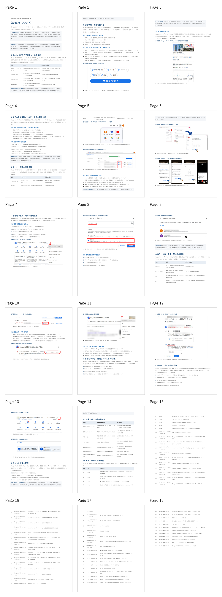
FoodLuck MEO 操作説明書 19
FoodLuck MEO 操作説明書 19 Googleについて Googleビジネスプロフィールの基本、オーナー権限、ステータス、クチコミ未反映、重複・停止時の対応を現場向けに整理した実務マニュアル この資料の目的 この資料はFAQ「Googleについて」カテゴリの64記事をもとに、飲食店の現場で判断に迷いやすいGo
5件
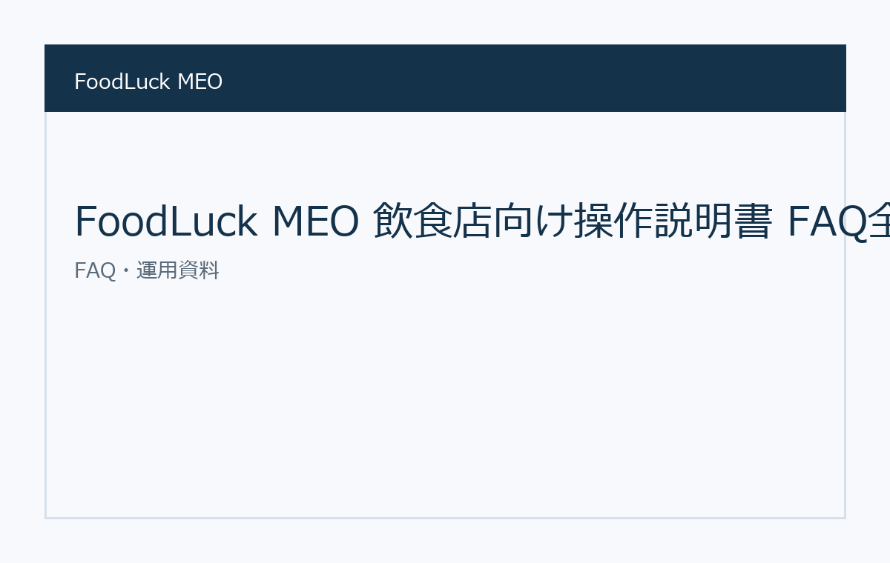
FAQ・運用資料
FoodLuck MEO 飲食店向け操作説明書 FAQ全カテゴリ本文反映版 / 日常運用・初期設定・連携機能まで網羅 この版の位置づけ MEOダッシュボードFAQ全548記事の本文を取得し、未取得0件で反映確認しました。飲食店スタッフが操作する項目、FoodLuck側または管理者が対応する項目、必要時に確認する項目を分

FAQ・運用資料
FoodLuck MEO 飲食店向け操作説明書 FAQ全記事詳細反映版 / 各カテゴリ下層記事の本文を操作・注意点まで統合 この版で直したこと FAQ全548記事の本文を、カテゴリ直下だけでなく下層記事ごとに確認し、各記事の概要・操作ポイント・注意点として本文化しました。単なるタイトル一覧ではなく、操作時に読める説明書
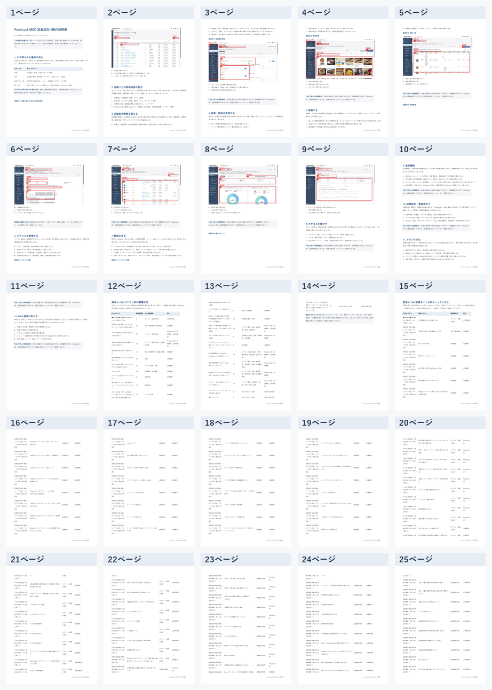
FAQ・運用資料
FoodLuck MEO 飲食店向け操作説明書 FAQ網羅版 / 店舗運用で迷わないための初版 この資料の位置づけ FAQページの23カテゴリを確認し、取得できた記事タイトル548件を、飲食店が使う流れに沿って整理しました。本文は店舗運用、巻末はFAQ網羅チェックリストです。 1. まず押さえる運用の流れ
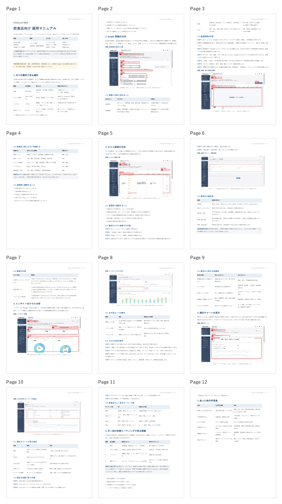
運用マニュアル
FoodLuck MEO 飲食店向け 運用マニュアル Google投稿、クチコミ返信、インサイトのクロス分析、順位チャートを使った日々の集客改善 毎週 随時 月1回 困った時 Google投稿 写真追加 未返信クチコミ確認 クチコミ返信 営業時間・臨時休業確認 インサイト分析 順位チャート確認 改善テーマ決定 投稿エラ
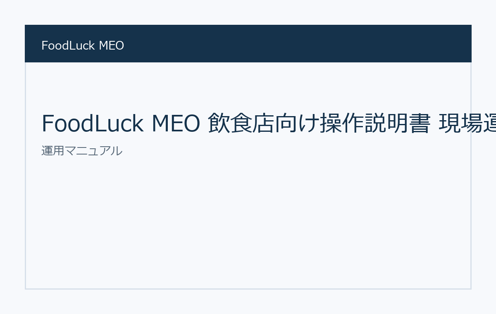
運用マニュアル
FoodLuck MEO 飲食店向け操作説明書 現場運用版 / 画面を見ながら使えるマニュアル この資料の使い方 FAQ全548記事の詳細反映版を元に、飲食店の現場で実際に使う順番へ整理しました。すべてのFAQを長く並べるのではなく、操作画面、手順、保存前の確認、困った時の見方を中心にまとめています。 1. まずはこの
2件
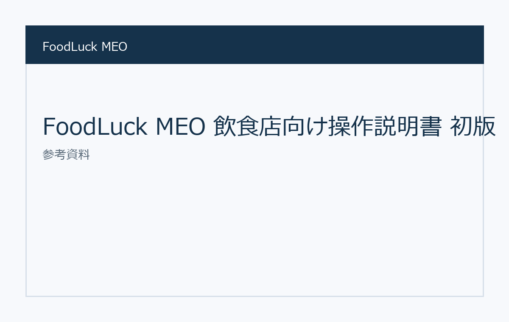
参考資料
FoodLuck MEO 飲食店向け操作説明書 初版 | 飲食店オーナー・店舗担当者向け この説明書の使い方 日常的に使う「店舗情報・写真・投稿・クチコミ・数値確認」を前半にまとめました。初期設定や高度な機能は後半に置いています。画面の赤枠は、最初に見る場所や押す場所の目印です。 1. はじめに
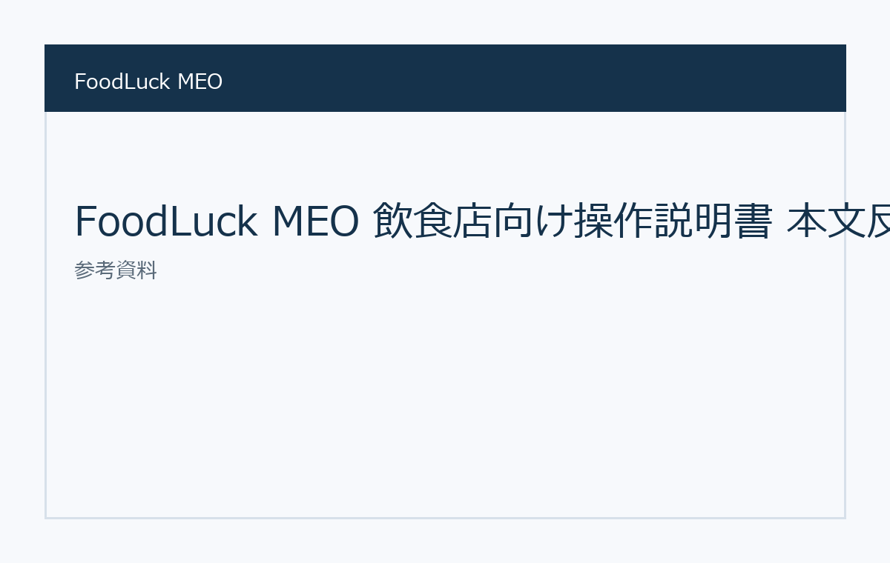
参考資料
FoodLuck MEO 飲食店向け操作説明書 FAQ本文反映版 / 日常運用で使う内容を中心に再構成 この版で反映したこと MEOダッシュボードFAQの本文を取得し、飲食店側の運用に必要な399記事分を確認しました。本文は丸写しではなく、店舗現場で使いやすい手順・注意点・判断基準として整理しています。 1. まず見る